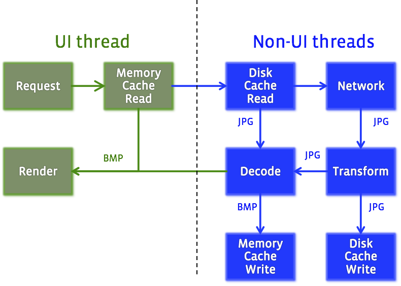

Fresco 简介
翻译自Introducing Fresco: A new image library for Android
这里并不是单纯的翻译，只是试图总结一下fresco的特点
fresco是facebook开源的管理图片的库，主要还是为了管理里图片使用的内存
不同的内存区域
对于Android来说，可以使用的内存区域包括:
java heapnative heapashmem
ashmem非常像native heap，但是有趣的是，它可以pin/unpin。所谓的unpin其实就是lazy free。也就是说，仅仅当Android需要更多内存的时候，才会释放这块内存。当Android重新pin这块内存时，如果这块内存不曾被是放过的话，那么原来的数据还在那里。
Purgeable bitmaps
ashmem并不能被java应用直接访问，除了一些特殊情况，恰好，图片就是其中的一个。当你创建一个解码过的图片，bitmap，api允许你指定这个图片是purgeable.
BitmapFactory.Options = new BitmapFactory.Options();
options.inPurgeable = true;
Bitmap bitmap = BitmapFactory.decodeByteArray(jpeg, 0, jpeg.length, options);
Purgeable的bitmap就在ashmem里。然而，garbage collector并不自动回收这些内存。Android系统只是在渲染系统渲染的时候pin住这些内存，然后在渲染结束后unpin他们。如果这些unpined图片需要再次被渲染的话，Android就会重新取得需要的内容，如果有必要的话，会重新在线(on the fly)解码。
但是在线解码(on the fly decode)发生在主线程里，由于这个原因，Google并不建议使用这个特性。目前的建议是使用inBitmap。但是这个新标志只有在android3.0里才存在。此外在4.4之前，这个特性还有个限制，是要求新解压的图片和原来的图片的大小要一致。这个要求显然并不适合大多数场景。
鱼和熊掌可以兼得
我们发现了一个既可以不用频繁释放／分配内存，又可以不阻塞UI的办法。也就是说，如果我们事先在非UI线程pin好一块内存，然后只要永远不要unpin它，这样我们就在ashmem上得到了一块内存，但是却不会引起UI阻塞的问题。非常幸运，我们NDK中有一个函数就是干这个的，AdnroidBitmap_lockPixels。这个函数设计之初是用来和unlockPixels配合使用来unpin这块内存的。当我们故意调用lockPixels但是并不调用unlockPixels时候，我们就很安全的在Java Heap之外得到了一块并不阻塞UI线程的内存。
像C++一样思考
ashmem没有类似garbage collector来保证不会内存泄漏。所以我们需要自己来保证。
在C++里，通常的解决办法是使用smart pointer类来实现引用计数。但这使用了cpp语言的工具，copy constructor，assignment constructor，deterministic destructor。这些语法糖在java中并不存在。所以我们自己要实现类似的机制。
我们通过两个类来实现这个机制。一个叫做SharedReference。这个类有两个方法，一个是addReference，一个是deleteReferece。通过这个来实现引用计数。
当然这个对于java程序员来说，明显很容易出错。java语言设计的时候就是要避免这样做。所以在SharedReference顶上，我们设计了CloseableReference。它是现实了Closeable接口，并且也实现了cloneabel。在构造函数和clone()里我们调用addReferece()。在close()里，我们调用deleteReference()。所以java开发者只需要遵循两个原则：
- 给一个CloseableReference赋值时候，调
.clone()。 - 离开作用域时，调用
.close()，通常是在一个final块里。
它不仅仅是一个loader，更是一个pipeline

在移动设备上显示一张图片要涉及很多步骤，如果我们把这些步骤看作是pipeline而不是loader，那么事情会完全不一样。每一步都应该尽可能的独立于其他步骤，每一步获得一些参数的输入，而产出一些结果。一些可能需要可以并行，一些需要串行。有一些仅仅需要在一些特定条件下执行，有一些对执行他们的线程有特定要求。而且考虑到弱网络和大图片，我们希望用户可以尽可能快的看到图片，即使是图片并没有完全下载下来。
对于Java来说，一般异步代码同步的时候我们会用到Future。但Future只能在执行完毕的时候带回来一个结果。当我们处理大图片的时候，我们需要处理一系列的结果。
我们的解决办法是涉及一个泛化版的Future，DataSource。它提供一个订阅的方法，调用者必须传递一个DataSubscriber和Executor给它。DataSubscriber将会收到DataSource发来的中间结果或者是最终结果的通知，并且会提供一个简单的办法去区分这两者。
在底层，上图里的每一个盒子都是使用一个新的架构实现的，叫做Producer/Consumer。这个架构是学习ReactiveX架构而搭建的。整个接口非常简洁，Producer只有一个方法，produceResults，它只有一个参数是Consumer对象。相对应的，Consumer只有一个方法叫做onNewResult。
我们使用一个向下面这样的一个系统来使producters变成一个链条。假设我们有一个producer，它的工作就是把类型I变成类型O。看起来如下：
public class OutputProducer<I, O> implements Producer<O> {
private final Producer<I> mInputProducer;
public OutputProducer(Producer<I> inputProducer) {
this.mInputProducer = inputProducer;
}
public void produceResults(Consumer<O> outputConsumer, ProducerContext context) {
Consumer<I> inputConsumer = new InputConsumer(outputConsumer);
mInputProducer.produceResults(inputConsumer, context);
}
private static class InputConsumer implements Consumer<I> {
private final Consumer<O> mOutputConsumer;
public InputConsumer(Consumer<O> outputConsumer) {
mOutputConsumer = outputConsumer;
}
public void onNewResult(I newResult, boolean isLast) {
O output = doActualWork(newResult);
mOutputConsumer.onNewResult(output, isLast);
}
}
}
这个设计使得我们可以组建一个非常复杂的工作步骤链条，但是却能保证每一步逻辑上的独立性。
动画－－从一到多
表情一般来说是GIF或者WebP格式的，这带来了挑战，一个动画由许多bitmap组成，每一个都需要解码，存储和显示。对于大的动画来说，在内存中存储每一帧显然是不可能的。
所以我们设计了AnimatedDrawable，实现了Android的Animatable接口，可以支持以上两种格式，并且我们做了优化，如果比较小，我们可以把所有帧放在内存中，否则我们在线解码。不过这些都是高度可定制的
关于Drawee
我们以前的实现使用了View，当图片下载好之后把一个placeholder的View和交换，但是这样效率不高，因为换View会引起Android重新计算整个layout pass。所以一个更合理的做法是使用Android的Drawable，它可以实时交换而不引起任何其他代价。
所以我们引入了Drawee。这个MVC类似的架构用来显示图片。Modal叫做DraweeHierarchy，它由有层次的Drawable组成，每一个实现特定的功能，imaging，layering，fade-in，scaling等。
DraweeControllers连接image pipeline和处理image后台的操作。它从pipeline收到通知，然后决定怎么处理结果。它决定了DrawHierarchy实际显示了什么，不论是placeholder，错误，或者准备好的图片。
DraweeViews仅仅有非常有限的功能，但是它提供的功能却是决定性的。它接受Android系统的事件来发出信号说，这个view是不是还在屏幕上显示。当不在屏幕上的时候，DraweeView可以让DraweeController释放被图片使用资源。同时如果这个图片还没有下载的话，它可以取消，这样就可以节约网络带宽的使用。
完